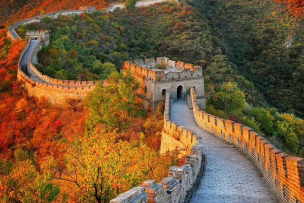

"Bất đáo Trường Thành phi hảo hán"...

Công ty du lịch hoàn mỹ vừa giới thiệu tour mới khám phá đất nước Trung Hoa xinh đẹp.
Điểm dừng chân đầu tiên là Bắc Kinh, chinh phục Vạn Lý Trường Thành đồ sộ. Đến Thập
Tam Lăng nghe những câu chuyện huyền bí trong quá trình xây lăng cùng với lời nguyền
của các thầy pháp xưa.Tham quan Cung Điện Mùa Hè- nơi Từ Hy Thái Hậu cho "đào hồ, đắp
núi, xấy chùa".
Đặc biệt, du khách đến thăm quản trường lớn nhất thế giới: Thiên An Môn - nơi gây chấn
động dư luận quốc tế một thời, ghé qua Cố Cung - biểu tượng của nền phong kiến lâu đời.
Món vịt quay Bắc Kinh sẽ làm cho du khách khó quên trong chuyến hành trình.
Ngoài ra, khách còn được chạm tay vào quốc bảo Trung Hoa. Tiếp đó, đến Thượng Hải
để tham quan vườn Dự Viên với kiến trúc hài hoà. Rồi dạo quanh bến Thượng Hải ngắm
nhìn khu lầu Vạn Quốc. Bất ngờ hơn, du khách đi đường hầm xuyên qua sông Hoàng Phố.
Đến Hoàng Châu, nghe kể về sự tích các cây cầu "Cầu gãy mà không gãy, cầu dài mà
không dài" - gắn liền với chuyện Lương SƠn Bá, Chúc Anh Đài. Du khách có dịp mua sắm
thoả thích từ quần áo, mỹ phẩm, đồ lưu niệm, đặc biệt là ngọc trai quý hiếm..Trung
Hoa cổ kính, Trung Hoa hiện đại chắc chắn là điểm đến khó quên trong mùa hè.